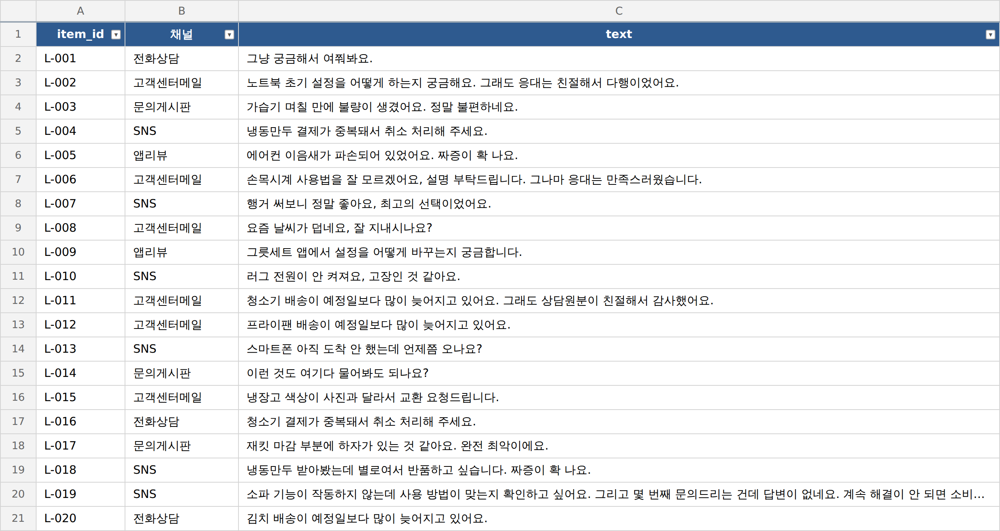
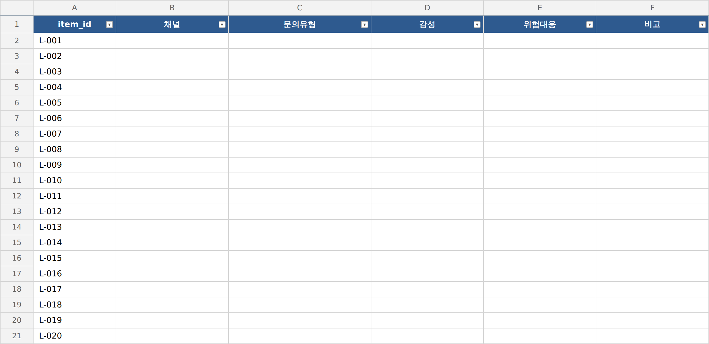

// 실습 5 · 고객 문의에 딱지 붙이기
개요¶
한 줄 목표: 고객 문의 520건을 문의유형/감성/위험대응의 세 가지 축으로, 느낌이 아니라 기준 문서 그대로 분류해 빈 표를 채우고 보기 밖 값이나 빈칸이 없는지 확인한다.
이 실습에서 쓰는 업무 유형 — 딱지 붙이기(분류) 확인하고 수정하기(검증·검수) · 여섯 가지 유형 다시 보기
오늘 받은 일¶
입사 첫 달. CS팀 사수가 말합니다.
"고객 문의가 520건 쌓였어요. 이걸 문의유형, 감정, 위험대응 세 가지 기준에 따라 정리해줘요. 판정 기준 문서는 줄게요. 느낌으로 찍지 말고 기준대로만 붙여야 누가 해도 같은 결과가 나와요. 감정이 좋아 보여도 신고·소송 같은 위험 신호가 있으면 위험대응 표시로 분류해야 해요. 애매하면 지어내지 말고 기타·중립으로 두고요."
실습 4에서 쿠폰 분석을 보고서로 마무리했다면, 이번에는 새로운 고객 문의 데이터를 이용해 업무를 처음부터 시작합니다. "이건 AI 못 시키겠는데?" 하고 멈칫하기 쉬운 일 중 하나가 바로 이런 정답이 모호한 분류 과제입니다. 같은 문장을 보고도 누구는 '불만', 누구는 '단순 문의'로 판단이 갈리기 때문입니다.
하지만 정해진 규칙을 따른다면 누가 작업하더라도 일관된 결과물이 나올 확률이 높아집니다. AI는 주어진 규칙만큼만 정확하니, 우리가 할 일은 규칙을 정교하게 만드는 것입니다. AI에게 기준 문서에 근거하여 520건을 직접 분류하도록 한 뒤, 보기 밖 값이나 빈칸이 없는지 검증합니다.
폴더에 있는 것¶
| 파일 | 무엇 |
|---|---|
1. VOC원문.xlsx |
고객 문의 520건 (item_id·채널·text) |
2. VOC_분류기준.pdf |
분류 기준 문서 |
3. 분류표.xlsx |
채워 넣을 빈 표 (item_id·채널·문의유형·감성·위험대응·비고) |
VOC_분류_키워드_기준.md |
기준 PDF를 요약한 키워드 참고표 (기준이 갈리면 PDF가 우선) |


실습에서 할 일¶
| 단계 | 할 일 |
|---|---|
| 1단계 | 기준 문서를 읽히고 한 건을 우선 분류한다 |
| 2단계 | 기준에 따라 520건을 한 번에 분류한다 |
| 3단계 | 보기 밖 값·빈칸·경계 케이스를 검산한다 |